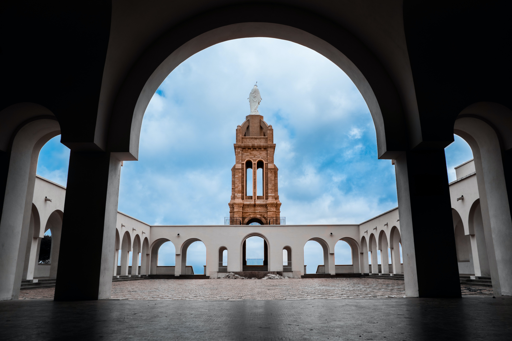

Santa Cruz
Santa Cruz is a historic neighborhood situated in the city of Oran, which was once a bustling Mediterranean port and a strategic stronghold for various empires throughout history. The neighborhood derives its name from the Santa Cruz Fort, a symbol of Spanish colonial power that dates back to the 16th century.


Jijel
Jijel is a coastal city known for its fantastic natural beauty.it boasts a rich cultural heritage, with historical landmarks and traditional architecture that reflect its unique blend of Berber, Arab, and French influences.All of these elements come together to make Jijel a truly magical destination